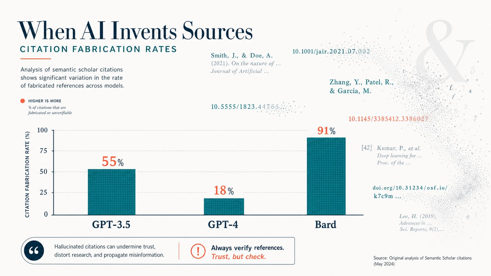
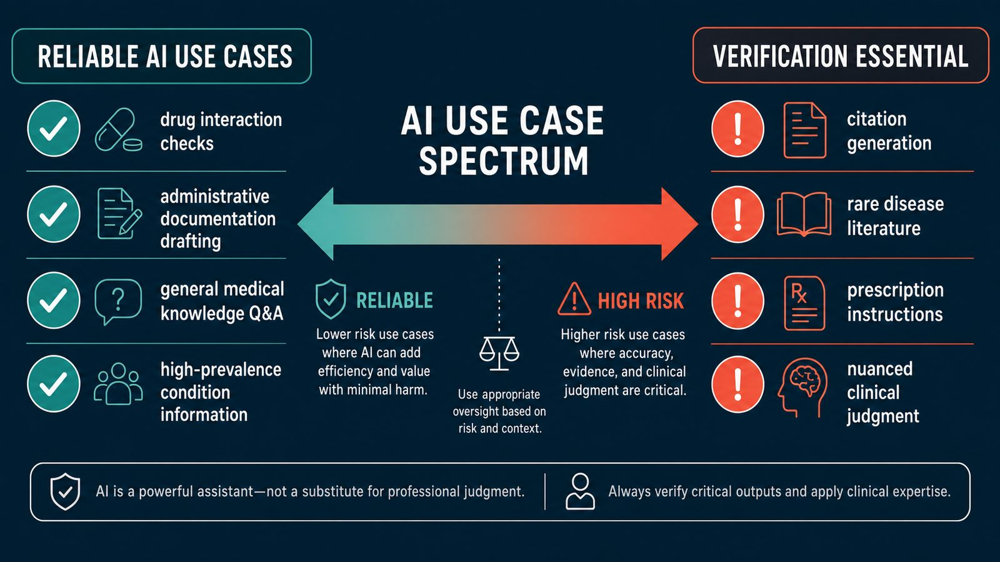

Key Takeaways
- In a study run in April 2023, GPT-3.5 fabricated 55% of bibliographic citations in short literature reviews; GPT-4 fabricated 18%, still a meaningful error rate.[1]
- Google's Bard (the version released July 13, 2023) hallucinated 91.4% of references when asked to replicate rotator cuff systematic reviews, and retrieved none of the relevant papers.[3]
- When GPT-4 wrote clinical notes, hallucinations were rarer, 1.47% of sentences, but 44% of those were classified as major: errors that could change diagnosis or management if left uncorrected.[5]
- In a survey of 70 clinicians reported in a preprint, 91.8% had encountered medical AI hallucinations, and 84.7% considered them capable of causing patient harm.[6]
- Rates differ widely by task: 55% fabricated citations in GPT-3.5 literature reviews versus 1.47% hallucinated sentences in GPT-4 clinical notes. The models, tasks and definitions differ, so the numbers are not directly comparable.[1][5]

What "Hallucination" Means in Medical AI, and What It Does Not
In AI research, a hallucination is not just any factual error. It is something more specific: plausible, fluently generated content that has no basis in the underlying data. When a large language model hallucinates a citation, it does not retrieve a misremembered reference; it produces one that does not exist, often apparently assembled by merging pieces of real references. In one study, most fabricated citations used the names of authors with previous relevant publications, a title that seemed pertinent and a credible journal format, yet the papers could not be found.[8]
This is what makes citation hallucination different from many other AI errors. A wrong number in a calculation can be obvious. A fabricated citation can survive casual inspection because each component looks plausible: Walters and Wilder note that ChatGPT's fabricated citations tend to look legitimate at first glance, and Gravel and colleagues called them deceptively real.[1][8]
The distinction from simple errors also matters for how we respond. Hallucinated citations call for a separate verification step: checking each reference against PubMed or a comparable indexed database. The study authors make the same point: users should check the citations ChatGPT generates, and any references these models produce warrant thorough validation.[1][3]
AI hallucination in clinical documentation works somewhat differently. Here, the model is summarizing a real patient encounter transcript. One study of AI-written clinical notes sorted hallucinations into four types: fabrication (information not evidenced in the transcript), negation (output that negates a clinically relevant fact), causality (speculating about the cause of a condition without support in the text) and contextual errors (mixing in unrelated topics).[5] Any of these can affect patient care if it reaches the clinical record uncorrected.
The Citation Fabrication Numbers: Model by Model
The quantitative picture of AI citation hallucination began taking shape in 2023. By the time Walters and Wilder published, six studies had systematically measured how often ChatGPT cites works that do not exist.[1] The two discussed first below reached alarming conclusions about GPT-3.5, and the one that also tested GPT-4 found it substantially better but still error-prone.
Walters and Wilder, writing in Scientific Reports, used GPT-3.5 and GPT-4 in the first week of April 2023 to generate 84 short literature reviews on 42 multidisciplinary topics (broad topics of the kind set in first-year college writing courses, which avoided specialized scientific subjects), then searched multiple databases and websites to check each of the 636 resulting citations.[1] 55% of the 222 GPT-3.5 citations were fabricated: they did not exist as published works. GPT-4 cut that number to 18%, a major improvement, but still meant that nearly one in five citations in a GPT-4 review was invented. Among real (non-fabricated) GPT-3.5 citations, 43% contained substantive errors, such as incorrect author names, titles, dates, journal titles, or volume, issue or page numbers. For GPT-4's real citations, the figure was 24%.
Bhattacharyya and colleagues, publishing in Cureus, took a medical approach. On April 12, 2023, they asked ChatGPT-3.5 to generate 30 short medical papers with at least three references each, then checked all 115 resulting references against Medline, Google Scholar and the Directory of Open Access Journals.[2] 47% were fabricated, 46% were authentic but inaccurate, and only 7% were authentic and accurate. The most common error was an incorrect PMID, listed in 93% of papers, followed by incorrect volume (64%), page numbers (64%) and year of publication (60%). The mean number of inaccurate components was 4.3 out of the seven evaluated per reference.
Gravel and colleagues in Montreal asked ChatGPT (version 3.5) 20 medical questions in February 2023 and found that 41 of 59 evaluated references (69%) were fabricated, although they appeared real.[8] Most fabricated citations used names of authors with previous relevant publications, a title that seemed pertinent and a credible journal format. Of the 41 fabricated references, 29 (71%) were reportedly published in a known medical journal, website or repository, with a year, volume and page that looked coherent for that journal; the volume and page range actually belonged to an unrelated article.

Evidence Comparison: Hallucination Rates Across Studies
The table below consolidates the primary quantitative findings from the studies reviewed here. Rates are not directly comparable across rows: task type, prompt design, model version, test date and the definition of a hallucination all affect the numbers. Taken together, they convey the scale of the problem.
| Study | Model Tested | Task | N Items | Hallucination / Fabrication Rate | Citation |
|---|---|---|---|---|---|
| Walters & Wilder 2023 | GPT-3.5 (ChatGPT, April 2023) | Literature review citations (multidisciplinary, general topics) | 222 citations | 55% fabricated | Sci Rep 2023[1] |
| Walters & Wilder 2023 | GPT-4 (ChatGPT, April 2023) | Literature review citations (multidisciplinary, general topics) | 636 citations in total across both models | 18% fabricated | Sci Rep 2023[1] |
| Bhattacharyya et al. 2023 | GPT-3.5 (ChatGPT, April 2023) | Medical paper references (30 papers) | 115 references | 47% fabricated; 46% authentic but inaccurate; 7% authentic and accurate | Cureus 2023[2] |
| Chelli et al. 2024 | GPT-3.5 and GPT-4 (July 19 versions) / Bard (PaLM 2, released July 13, 2023) | Systematic review replication (rotator cuff); "hallucinated" if 2 of title, first author or year were wrong | 471 references (33 prompts) | GPT-3.5: 39.6% · GPT-4: 28.6% · Bard: 91.4% | JMIR 2024[3] |
| Aljamaan et al. 2024 | ChatGPT 3.5, Bing, Bard, Elicit, SciSpace, Perplexity (test dates not stated in the paper) | Medical reference generation (10 prompts, 10 references each) | 500 references scored per item | Reference Hallucination Score highest for ChatGPT 3.5 and Bing (11), lowest for Elicit and SciSpace (1); Bard generated no references; references not relevant to the prompt keywords: 61.6% | JMIR Med Inform 2024[4] |
| Gravel et al. 2023 | GPT-3.5 (ChatGPT, February 2023) | Medical Q&A references (20 questions, diverse topics) | 59 references | 69% fabricated | Mayo Clin Proc Digit Health 2023[8] |
| Asgari et al. 2025 | GPT-4 only (GPT-4-32k-0613), 18 prompt and workflow configurations | Clinical note generation from primary care consultation transcripts | 12,999 note sentences, 450 notes | 1.47% per sentence; 44% of those = clinically major | npj Digital Med 2025[5] |
Beyond Citations: Clinical Vignettes and Documentation Hallucination
Citation fabrication gets the most attention because it is easy to measure: a reference either exists or it does not. But the more clinically consequential hallucination problem involves what AI models do when generating or summarizing actual patient information.
Asgari and colleagues reported what they describe as the largest manual evaluation of AI clinical note generation to date, in npj Digital Medicine in 2025.[5] Using one model, GPT-4, across 18 experimental configurations, they generated 450 notes from a public dataset of primary care consultation transcripts; clinicians reviewed 12,999 note sentences and 49,590 transcript sentences. The headline hallucination rate of 1.47% per sentence sounds reassuringly low. Read the next line: 44% of those hallucinated sentences were classified as major, meaning they could affect the patient's diagnosis or management if left uncorrected. All seven authors list the company Tortus AI as an affiliation, and the prompts tested began with those used in the authors' own product.
The breakdown of hallucination types shows where the clinical danger concentrates. Fabrication (information not evidenced in the transcript) accounted for 43% of hallucinations. Negation, where the output negates a clinically relevant fact, accounted for 30%; the authors called these the most concerning, because they mostly appeared in the plan section and contradicted what was said during the consultation. Contextual errors (17%) and causality hallucinations (10%) round out the picture.[5]
Major hallucinations occurred in all sections of the note, but most commonly in the Plan (21%), Assessment (10.5%) and Symptoms (5.2%) sections. The plan section matters most: as the authors note, it often contains direct instructions or actions for colleagues or patients.[5]
A different kind of test shows how models can elaborate on false information they are given. Omar and colleagues embedded one fabricated detail (a laboratory test, a physical or radiological sign, or a medical condition) in each of 300 physician-validated simulated vignettes and tested six large language models, generating 5,400 outputs.[11] Models elaborated on the fabricated detail in 50% to 82% of cases, depending on the model and prompting method. A mitigation prompt lowered the average rate across models from 66% to 44%, and for the best-performing model, GPT-4o, from 53% to 23%. The authors concluded that prompt engineering reduces these errors but does not eliminate them.
The Asgari group also reported something more hopeful: changing prompts and workflows changed error rates. Moving from one structured prompt to a refined one cut major hallucinations by 75% and major omissions by 58%, though the absolute numbers were small (major hallucinations fell from 4 to 1).[5] Not every change helped: adding a chain-of-thought fact-extraction step increased major hallucinations from 4 to 25. The baseline problem is real, but it responds to carefully tested changes, and untested changes can make it worse.
The Clinician Perspective: What Surveys Show
The quantitative studies above describe test conditions. Survey data describes what clinicians report from practice, and the picture is sobering.
A global survey of 70 clinicians across 15 specialties, reported by Kim and colleagues in a 2025 preprint on medical hallucinations in foundation models (posted on arXiv and not yet peer reviewed), found that 91.8% had encountered medical hallucinations, and 84.7% considered them capable of causing patient harm.[6] A survey of this size cannot tell us how common hallucinations are across all clinicians, but these concerns come largely from people who report having met the problem themselves.
The same preprint reported that physician audits attributed 64% to 72% of residual hallucinations to failures in causal or temporal reasoning rather than knowledge gaps.[6] If that finding holds up in peer review, the solution is not only about training more medical data into models: a meaningful share of hallucinations would arise from how models reason about sequences of events and cause and effect.
The regulatory conversation reflects these concerns. At its November 2024 meeting, the FDA's Digital Health Advisory Committee, which gives advice and recommendations to the FDA rather than setting requirements, recommended that premarket evaluation of generative AI-enabled devices characterize performance using measures that include hallucination rates.[9] The committee also emphasized postmarket performance monitoring that includes detection of hallucinations and resulting adverse events, and said that maintaining a human in the loop, with sufficient training, is essential to ensure safety.
Why Hallucination Rates Vary: Training Data, Task Type, and Prompt Format
Not all AI tasks produce equivalent hallucination risk. Rates in these studies range from 1.47% of sentences in GPT-4 clinical notes to 55% of GPT-3.5 citations and 91.4% of Bard references, but they measured different tasks, models and definitions.[1][3][5] Understanding what drives the differences helps identify where verification effort should concentrate.
One explanation offered by the study authors is mechanical. Large language models predict the next word in a sequence from statistical patterns learned during training, so on their own they cannot distinguish accurate from false information.[2] Walters and Wilder describe ChatGPT as fundamentally a text transformer, not an information retrieval system.[1] A citation demands an exact combination of authors, title, journal, volume and pages, and a fluent near-match is still wrong; Gravel and colleagues observed that fabricated references seemed constructed by merging existing references.[8] Walters and Wilder add a caution: their experience suggests the software may try to treat citations differently from regular text, so fabrication may partly reflect a failure to recognize which parts of the text are bibliographic data.[1]
Topic matters too. In the Cureus study, the share of fabricated references differed by subject: 66% in papers on healthcare disparities versus 36% for prevention strategies and 34% for recent advances, and by therapeutic area, with the highest rates in pulmonology (75%), dermatology (64%) and gastroenterology (62%).[2] Authors of the Reference Hallucination Score study list insufficient training data among several possible contributors to hallucination.[4]
Prompt format also affects hallucination risk. In the Reference Hallucination Score study, chatbots generally scored worse when prompted with clinical scenarios or complex-format prompts than with basic ones.[4] In clinical documentation, the Asgari group found that some prompt changes cut major hallucinations while a chain-of-thought extraction step increased them, which shows how consequential these design choices are.[5]
Fabricated references are also reaching the published literature. In May 2026, Topaz and colleagues reported in a letter in The Lancet an audit of fabricated citations across 2.5 million biomedical papers.[7] According to CIDRAP's news report on the letter, 4,046 of 97.1 million verified references were likely fake, and the fabrication rate rose over 12-fold, from four per 10,000 papers in 2023 to 51.3 per 10,000 at the end of 2025; review articles had a fabrication rate 57% higher than other paper types.[10] The Lancet later published a correction notice for the letter (July 2026), which we could not read, so check the letter itself for final figures.
What This Means: Where AI Is Lower-Risk vs. Where Verification Is Essential
The evidence reviewed here does not support a blanket conclusion that medical AI is unreliable. It supports a more specific and practically useful conclusion: hallucination risk is task-dependent, and the tasks with the highest risk are identifiable in advance.
The lists below are practical guidance drawn from these findings, not measured accuracy rates; the studies above did not test most of these uses directly.
Lower-Risk Uses, With Clinician Review:
- General medical knowledge questions about common conditions, checked against a trusted source
- Drafting administrative documentation (prior auth letters, referral notes) under physician review before submission
- Drug interaction lookups when the AI is grounded in a vetted pharmacological database rather than generating from memory
- Structured clinical documentation with human review and workflow-optimized prompts
- Differential diagnosis generation as a starting point for clinician reasoning, not a final answer
Verification Is Essential When Using AI For:
- Generating bibliographic citations: every reference must be independently verified in PubMed or an indexed database
- Summarizing literature on rare or specialized topics, where published evidence may be thin
- Producing patient-facing prescription instructions: never transmit without prescriber review of every line
- Clinical documentation with negation-type statements (patient does not have X), a specific vulnerability in AI-written notes
- Any clinical reasoning in nuanced presentations where multiple competing diagnoses apply
The distinction between these two categories is not about trust in AI as a concept; it is about matching the tool to the task. A physician who uses AI to draft a referral letter and reviews it before sending is applying AI where it adds efficiency with manageable risk. A researcher who submits an AI-generated literature review without checking each citation is relying on a tool in exactly the context where its measured failure rate is highest.
Week 1 explored how AI invents entire medical conditions that do not exist. See The Bixonimania Experiment: How AI Fabricates Diseases.
Week 2 reviewed the first FDA warning letter targeting an AI medical tool. See FDA's First AI Warning Letter: What It Means for Medical AI Oversight.
For the diagnostic accuracy comparison, see AI Chatbots vs. Physicians: Diagnostic Accuracy Head-to-Head.
Bottom Line
The data on medical AI hallucination is now substantial enough to draw some firm conclusions. In the citation studies reviewed here, fabrication or hallucination rates ranged from 18% to 91%, depending on model, task and definition.[1][3] These are not edge cases: one research group wrote that its findings supported the view that hallucinations may be an intrinsic property of current large language models.[5] In the two studies here that tested both, GPT-4 did better than GPT-3.5.[1][3] These results come from specific model versions studied in papers published from 2023 to 2025, and newer models may perform differently, but none of these studies shows that unverified citation use is safe in clinical or academic work.
The clinical documentation picture is more encouraging. A 1.47% per-sentence hallucination rate is manageable with structured review workflows, and the same study showed that carefully tested prompt changes can reduce major errors.[5] The 44% rate of clinically major errors among those hallucinations means the review cannot be perfunctory; it requires genuine clinician attention to the output, not rubber-stamp approval.
The clinician survey data (91.8% encountering hallucinations and 84.7% believing them capable of patient harm, in a preprint survey of 70 clinicians) is not a call to stop using AI in medicine.[6] It is a call to use it with the same critical evaluation that clinicians apply to any new diagnostic tool or information source. Research evidence has never been trusted without verification. AI-generated content should not be the first exception.
Frequently Asked Questions
What is the hallucination rate in medical AI?
Rates vary substantially by task, model and definition. In Walters and Wilder's 2023 Scientific Reports study, GPT-3.5 fabricated 55% of bibliographic citations and GPT-4 fabricated 18%.[1] In a study of systematic review reference generation published in 2024, Google's Bard hallucinated 91.4% of references, versus 39.6% for GPT-3.5 and 28.6% for GPT-4.[3] For GPT-4 writing clinical notes, the per-sentence hallucination rate was 1.47%, though 44% of those errors were classified as major.[5]
Why does AI fabricate medical citations?
Large language models generate text by predicting the next word from statistical patterns learned in training, not by retrieving facts from an indexed database.[2] A citation requires an exact combination of author names, journal, year, volume and page numbers. In one study, fabricated references seemed constructed by merging existing references, which is why they can look credible while not matching any real paper.[8]
Is AI ever reliably accurate in clinical settings?
The studies reviewed here mostly measured citations and note writing, so they cannot say how accurate AI is for every clinical task. They do show that error rates depend heavily on the task: about 1.47% of sentences in GPT-4 clinical notes were hallucinated, compared with 18% to 55% of citations in literature reviews.[1][5] Lower-risk uses, such as drafting documents for physician review, still need a human check before anything reaches a patient or a record.
How should clinicians handle AI tools given these hallucination rates?
The FDA's Digital Health Advisory Committee advised in November 2024 that maintaining a human in the loop, with sufficient training, is essential to ensure safety; the committee's points are recommendations to the FDA, not requirements.[9] Practically, this means checking every AI-generated citation against PubMed before use, reviewing AI clinical documentation sentence by sentence before it enters the medical record, and treating AI output as a draft requiring physician verification, not a final product.
How to cite this guide
Bhavsar P. Hallucination Rates in Medical AI: What the Citation Fabrication Data Tells Us. TeleDirectMD Health Guides. Last reviewed June 2026. https://teledirectmd.com/health-guides/ai-medical-hallucination-rates-2026/
References
- Walters WH, Wilder EI. Fabrication and errors in the bibliographic citations generated by ChatGPT. Sci Rep. 2023;13(1):14045. doi: 10.1038/s41598-023-41032-5. pmc.ncbi.nlm.nih.gov/articles/PMC10484980/
- Bhattacharyya M, Miller VM, Bhattacharyya D, Miller LE. High Rates of Fabricated and Inaccurate References in ChatGPT-Generated Medical Content. Cureus. 2023;15(5):e39238. doi: 10.7759/cureus.39238. pubmed.ncbi.nlm.nih.gov/37337480/
- Chelli M, Descamps J, Lavoué V, et al. Hallucination Rates and Reference Accuracy of ChatGPT and Bard for Systematic Reviews: Comparative Analysis. J Med Internet Res. 2024;26:e53164. doi: 10.2196/53164. jmir.org/2024/1/e53164/
- Aljamaan F, Temsah MH, Altamimi I, et al. Reference Hallucination Score for Medical Artificial Intelligence Chatbots: Development and Usability Study. JMIR Med Inform. 2024;12:e54345. doi: 10.2196/54345. medinform.jmir.org/2024/1/e54345/
- Asgari E, Montaña-Brown N, Dubois M, et al. A framework to assess clinical safety and hallucination rates of LLMs for medical text summarisation. NPJ Digit Med. 2025;8(1):274. doi: 10.1038/s41746-025-01670-7. pmc.ncbi.nlm.nih.gov/articles/PMC12075489/
- Kim Y, Jeong H, Chen S, et al. Medical Hallucinations in Foundation Models and Their Impact on Healthcare. arXiv preprint 2503.05777, version 2 (November 2, 2025). Preprint, not peer reviewed. arxiv.org/abs/2503.05777
- Topaz M, Roguin N, Gupta P, Zhang Z, Peltonen LM. Fabricated citations: an audit across 2·5 million biomedical papers [letter]. Lancet. 2026;407(10541):1779-1781. doi: 10.1016/S0140-6736(26)00603-3. A correction notice was published in July 2026 (doi: 10.1016/S0140-6736(26)01339-5). pubmed.ncbi.nlm.nih.gov/42107362/
- Gravel J, D'Amours-Gravel M, Osmanlliu E. Learning to Fake It: Limited Responses and Fabricated References Provided by ChatGPT for Medical Questions. Mayo Clin Proc Digit Health. 2023;1(3):226-234. doi: 10.1016/j.mcpdig.2023.05.004. pmc.ncbi.nlm.nih.gov/articles/PMC11975740/
- U.S. Food and Drug Administration. 24 Hour Summary of the Digital Health Advisory Committee Meeting, November 20–21, 2024. Accessed November 15, 2026. fda.gov/media/184078/download
- Van Beusekom M. Review uncovers rising rate of fake references in published biomedical papers. CIDRAP News. 2026. News report on reference 7. Accessed November 15, 2026. cidrap.umn.edu
- Omar M, Sorin V, Collins JD, et al. Multi-model assurance analysis showing large language models are highly vulnerable to adversarial hallucination attacks during clinical decision support. Commun Med (Lond). 2025;5(1):330. doi: 10.1038/s43856-025-01021-3. pubmed.ncbi.nlm.nih.gov/40753316/